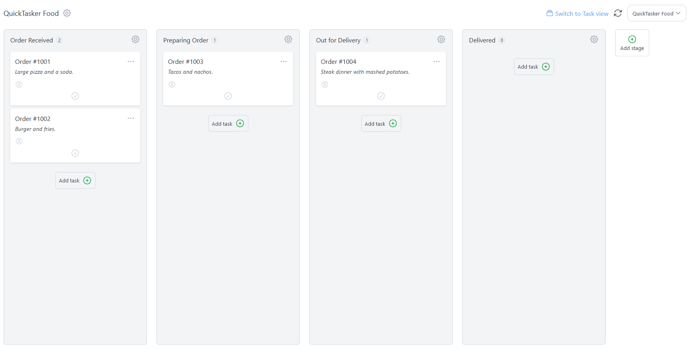
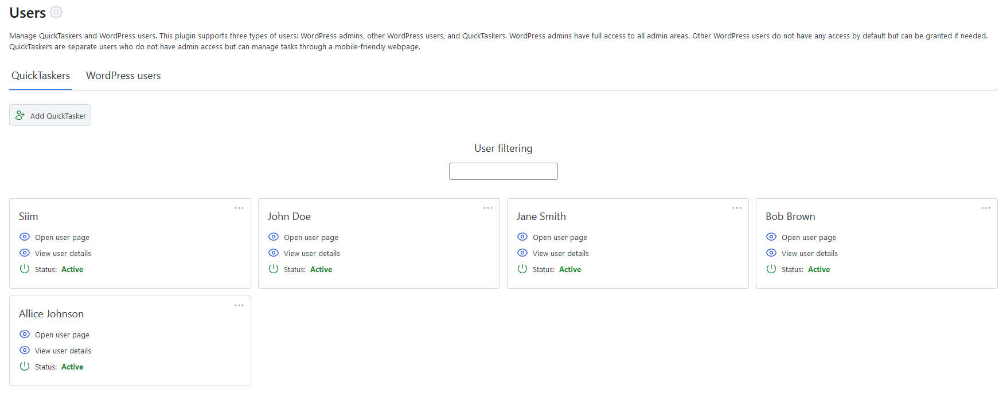
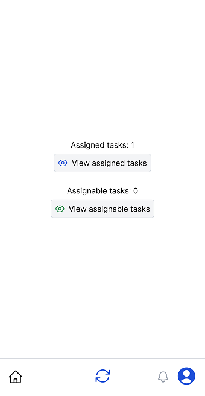
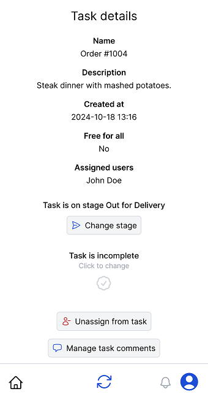

“QuickTasker” Documentation v1.0
“QuickTasker”
Thank you for downloading QuickTasker plugin. The following is a guide to help you get started with QuickTasker. This documentation provides information on the features and usage of the plugin, divided into sections for easy navigation and understanding.
Table of Contents
A) Admin areas - top
This plugin provides admin areas accessible to WordPress users who have the required permissions. In the admin areas, users can manage boards, tasks, users, settings etc. Currently there are 4 permissions a user can have and WordPress admins have all of them by default.
quicktasker_admin_roleProvides access to admin areas and allows to view, create and modify resources.
quicktasker_admin_role_manage_usersProvides access to users page.
quicktasker_admin_role_manage_settingsProvides access to settings page.
quicktasker_admin_role_allow_deleteProvides access to delete resources.
B) Board - top
"Board" is a central feature designed to help you organize and manage your tasks efficiently. Each board can have multiple stages, and each stage can contain numerous tasks. This hierarchical structure allows you to break down your projects into manageable parts and track progress effectively.
Board settings: Settings can be accessed by clicking the gear icon next to the board name. The modal that opens have the following settings and features.
- Change board name and description
- Delete the board
- [PRO feature] Manage board wide custom fields that will be added to all board tasks
Stages: A board is divided into several stages, each representing a different phase of your project. For example, you might have stages like "To Do," "In Progress," and "Completed." You can customize these stages to fit your workflow and project requirements. Stage settings can be accesses by clicking stage gear icon and selecting edit stage. The following settings are provided.
- Change stage name and description
Stage actions Stage actions can be accessed by clicking the stage gear icon
- Move stage left. Shifts stage to left if possible.
- Move stage right. Shifts stage to right if possible.
- Edit stage. Opens a stage settings modal.
- Archive all stage tasks. Adds all tasks in the stage to archive.
- Delete stage. Deletes the stage. This actions is disabled when there are tasks in the stage.
C) Task - top
"Task" represents an individual unit of work that needs to be completed. Tasks are the building blocks of your projects, allowing you to break down complex projects into manageable pieces

Editing Tasks: You can easily edit tasks to update their details, such as the title, description. This ensures that all relevant information is up-to-date and accessible to your team.
Assigning Users: Tasks can be assigned to QuickTasker users, allowing you to delegate responsibilities and track who is working on what. This helps in managing workloads and ensuring accountability.
Marking Tasks as Completed: Once a task is finished, you can mark it as completed. This helps in tracking progress and ensuring that nothing is overlooked.
[Pro feature] Custom Fields: You can add custom fields to tasks to capture additional information specific to your workflow. This flexibility allows you to tailor the task details to your project's unique requirements.
Comments and Logs: Each task supports both private and public comments, enabling team members to communicate and collaborate effectively. Additionally, you can view logs related to the task to track changes and updates over time.
D) Archive - top
Archive page allows you to view all archived tasks. Archived tasks can be restored or deleted.
E) Users - top
This plugin supports three types of users: WordPress admins, other WordPress users, and QuickTaskers. WordPress admins have full access to all admin areas. Other WordPress users do not have any access by default but can be granted if needed. QuickTaskers are separate users who do not have admin access but can manage tasks through a mobile-friendly webpage.
Creating QuickTasker: WordPress admins (or users with required permissions) can create new QuickTasker users, providing them with the necessary credentials to access the system. This allows for effective delegation and collaboration within your team.
Editing QuickTasker: Similar to tasks, QuickTasker details can be edited to keep information up-to-date.
[Pro feature] Custom Fields: You can add custom fields to QuickTasker profiles to capture additional information specific to your workflow. This flexibility allows you to tailor user profiles to meet your project's unique requirements.
Comments and Logs: Each QuickTasker profile supports both private and public comments, enabling team members to communicate and collaborate effectively. Additionally, you can view logs related to the user to track changes and updates over time.
WordPress users: Ability to add or remove different permissions.
F) User page - top
Each QuickTasker user has their own mobile-like user page. On this page, users can manage their tasks and collaborate with their team effectively.
 Assigned Tasks: Users can view all the tasks they are currently assigned to. This helps them keep track of their responsibilities and ensures that they stay on top of their work.
Assignable Tasks: In addition to their assigned tasks, users can also see tasks that are available for them to take on. This allows for flexibility and helps in distributing the workload evenly among team members.
Task Details: Users can click on task to view its details. This includes information such as the task title, description, task stage, and any associated custom fields. Having all the relevant information in one place makes it easier for users to understand and complete their tasks.
Comments: Users can add comments to tasks directly from their user page, enabling effective communication and collaboration within the team. Comments can be used to ask questions, provide updates, or share important information related to the task.
G) User sessions - top
User sessions page allows you to track and manage user logins to user page. By default user session lasts one day.
H) Logs - top
Logs page allows to view all logs generated by this plugin
I) Settings - top
Settings page provides useful options to configure and customize the QuickTasker plugin according to your needs.
- Custom styles: Allows to add custom CSS rules to user page.